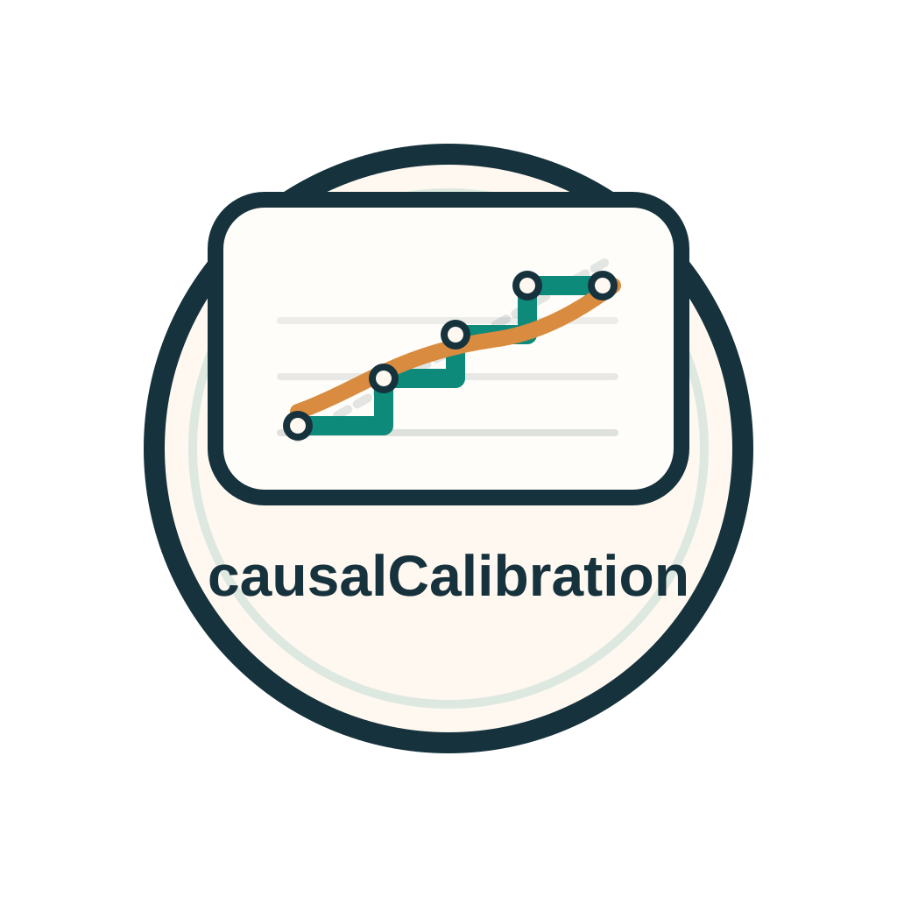

Ranking is not scale
An HTE learner can correctly sort who benefits more while still exaggerating high predicted effects or pushing low predicted effects too far downward.
Heterogeneous Treatment Effects

causalCalibration wraps around an HTE model you already trained and
recalibrates its treatment-effect predictions. The package provides
standard calibration, pooled cross-calibration, and doubly robust
diagnostics in both Python and R.
Calibration is about getting the effect scale right, not just the ranking. A model can sort units reasonably well and still overstate or understate the treatment effect in the tails.
dr and r calibration lossesWhy Calibration
The ICML paper makes the key distinction: a useful HTE predictor can still be poorly calibrated in magnitude, especially in the extremes.
An HTE learner can correctly sort who benefits more while still exaggerating high predicted effects or pushing low predicted effects too far downward.
If treatment assignment depends on whether a score is above zero or above a practical threshold, miscalibration can turn a decent ranking model into a poor decision rule.
You do not need to retrain your whole causal learner. The package learns a calibration map on top of the predictions you already have and preserves the basic ordering for monotone methods.
A calibrated treatment-effect score is one where units with the same predicted score have, on average, a treatment effect close to that score. That is the user-facing intuition behind both the paper and the package API.
How It Works
The package does not train a treatment-effect learner for you. It assumes you already have raw HTE predictions and then fits a post-hoc calibration map using either a doubly robust pseudo-outcome or an R-loss style target.
Step 1
Start with raw treatment-effect scores from any learner you trust enough to use.
Step 2
Use observed outcomes, treatment, and nuisance estimates to learn a calibration function.
Step 3
Apply the fitted map to new predictions and check remaining calibration error.
The paper studies causal isotonic calibration and cross-calibration. The package keeps isotonic as the core method, adds smooth and simpler practical backends, and exposes both ordinary calibration and pooled cross-calibration through a small API.
Workflow Choice
This is the first decision most users should make, because it determines which prediction objects you need to save from the upstream HTE fit.
Standard
fit_calibrator()Use this when you have a single prediction per observation or a separate calibration sample.
predictions, treatment, outcome, and nuisance estimates.Cross
fit_cross_calibrator()Use this when the HTE learner itself was cross-fitted and you want to fit and calibrate in sample without carving out a separate calibration split.
predictions.n x K or m x K matrix of fold-specific predictions.The packaged cross-calibrator is the pooled variant: it fits one calibration map on pooled out-of-fold predictions, applies that map to each fold-specific column, and then returns the order-statistic median row by row.
Losses
The loss is the conceptual choice. The method is mostly a shape choice for the calibration map you fit afterward.
Original Population
loss="dr"The doubly robust loss calibrates toward the original study population and is usually the most natural first choice.
mu0, mu1, and propensity.Overlap-Weighted Population
loss="r"The R-loss emphasizes the overlap region through residualized treatment weights, which can be preferable when propensity scores are extreme.
outcome_mean and propensity.Implemented Methods
Both the Python and R packages expose the same four calibration backends. Isotonic is the paper-native choice; the others are practical alternatives for smoother or more transparent recalibration.
isotonicMonotone stepwise recalibration. This is the closest match to the ICML paper and the default method most users should start with.
smooth_isotonicStarts from isotonic blocks and smooths them into a monotone curve. Use this when the isotonic staircase is too rough for your downstream use.
linearA nonnegative-slope linear recalibration. Useful when you want a simple, low-variance correction and an easily interpretable map.
histogramWeighted piecewise-constant binning. Good as a coarse baseline or when you want a deliberately transparent map.
Quickstart
Install from the repo root with python3 -m pip install -e python or
install.packages("r/causalCalibration", repos = NULL, type = "source").
Python
from causal_calibration import (
fit_calibrator,
diagnose_calibration,
)
cal = fit_calibrator(
predictions=tau_hat,
treatment=a,
outcome=y,
mu0=mu0_hat,
mu1=mu1_hat,
propensity=e_hat,
loss="dr",
method="isotonic",
)
tau_star = cal.predict(tau_new)
diag = diagnose_calibration(
predictions=tau_star,
comparison_predictions=tau_hat,
treatment=a,
outcome=y,
mu0=mu0_hat,
mu1=mu1_hat,
propensity=e_hat,
)R
library(causalCalibration)
cal <- fit_calibrator(
predictions = tau_hat,
treatment = a,
outcome = y,
mu0 = mu0_hat,
mu1 = mu1_hat,
propensity = e_hat,
loss = "dr",
method = "isotonic"
)
tau_star <- predict(cal, tau_new)
diag <- diagnose_calibration(
predictions = tau_star,
comparison_predictions = tau_hat,
treatment = a,
outcome = y,
mu0 = mu0_hat,
mu1 = mu1_hat,
propensity = e_hat
)
diagnose_calibration() estimates calibration error with a doubly
robust procedure, supports before-versus-after comparisons through
comparison_predictions, and reports uncertainty using balanced
jackknife folds.
Resources
The site is intentionally compact. Use the repo materials below when you want a deeper walkthrough or the original methodological references.
The notebook and vignette show the end-to-end workflow. The repo also keeps
the longer method notes in the docs/ source files.
The package is grounded in the causal isotonic calibration paper and the calibration-error literature for HTEs, with practical loss choices informed by DR-learner and R-learner style constructions.